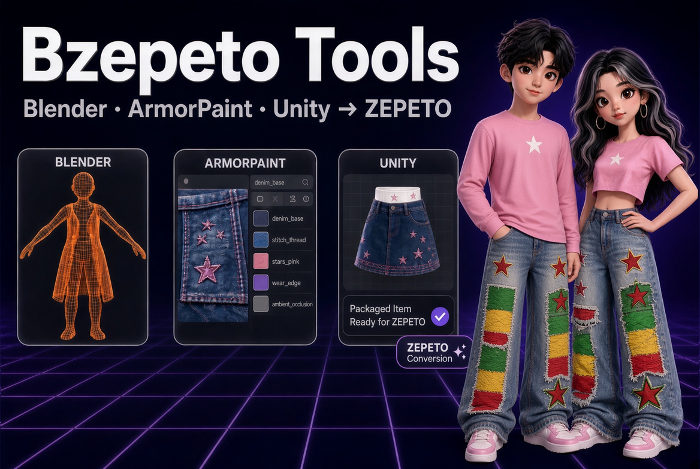

BZepeto — ZEPETO Item Creator Suite for Blender, Unity & ArmorPaint
🇺🇸 English | 🇰🇷 한국어
BZepeto는 Chamiseul(ChamIseul Creator)이 만든 독립 도구입니다. NAVER Z(ZEPETO), Blender 재단, Unity Technologies, ArmorPaint 개발자가 만들거나 보증·지원하는 제품이 아닙니다.

새 소식
v1.0.0 — 첫 출시
- Blender 애드온: 제페토 규격 검사와 전송, 스윙 본 마법사, 체형, 의상 피팅, 플레이그라운드
- ArmorPaint 라이브 링크: 모델링하면서 바로 칠하기, 제페토 스마트 머티리얼, 스티치 자동 생성
- ZEPETO Studio(Unity 2020.3.9)용 Unity 패키지: 핫폴더 자동 임포트, 제페토 셰이더 자동 지정
BZepeto란?
제페토 아이템이 거치는 길을 하나로 이었습니다. Blender에서 만들고, ArmorPaint에서 칠하고, Unity의 ZEPETO Studio로 넘기기까지 — 단계마다 내보내고, 불러오고, 머티리얼을 다시 연결할 필요가 없습니다.
Blender ──①──> ArmorPaint ──②──> Blender
│ └────③────> Unity (ZEPETO Studio)
└──────────────④──────────────> Unity (ZEPETO Studio)
① 메쉬가 실시간으로 ArmorPaint에 전달 ② 칠한 텍스처가 Blender로 돌아옴 ③ 텍스처를 Unity로 바로 전송 ④ 완성된 아이템을 검사·패키징해 Unity로 전송
필요한 것
| OS | Windows 10 / 11, 64비트 |
| Blender | 4.5 이상 (4.5 – 5.3에서 확인) |
| Unity | ZEPETO Studio 프로젝트, Unity 2020.3.9f1 |
| GPU | DirectX 12 지원 (ArmorPaint용) |
| 제페토 베이스 캐릭터 | 제페토 크리에이터 리소스의 creatorBaseSet_zepeto.fbx — 제페토의 파일이라 포함되어 있지 않습니다 |
설치
다운로드에 들어 있는 파일:
| 파일 | 내용 |
|---|---|
bzepeto_blender.zip |
Blender 애드온 |
com.bzepeto.unity2020-<버전>.tgz |
ZEPETO Studio(Unity 2020.3.9)용 Unity 패키지 — 이것을 설치하세요 |
com.bzepeto.unity-<버전>.tgz |
Unity 6 / 2022.3용 Unity 패키지 (제페토가 Unity 6으로 옮겨갈 때 대비) |
BZepeto_ArmorPaint_<버전>_win64.zip |
BZepeto 플러그인이 켜진 상태의 ArmorPaint |
1. Blender
- Edit > Preferences > Add-ons에서 오른쪽 위 ▼를 누르고 Install from Disk
bzepeto_blender.zip선택- 3D 뷰포트에서 N 키를 누르면 BZepeto 탭이 나타납니다
2. ArmorPaint
BZepeto_ArmorPaint_<버전>_win64.zip을 원하는 곳에 압축 해제합니다. 예:C:\Tools\BZepeto_ArmorPaint(Program Files 아래는 피하세요 — ArmorPaint가 설정을 저장하지 못합니다)ArmorPaint.exe를 한 번 실행해 창이 뜨는지 확인합니다- Blender에서 Edit > Preferences > Add-ons > BZepeto를 열고 ArmorPaint Executable을
그
ArmorPaint.exe로 지정합니다
왜 플러그인만이 아니라 ArmorPaint 전체가 들어 있나요? 라이브 링크에는 ArmorPaint 자체의 작은 수정이 필요합니다. 일반 ArmorPaint는 Blender 창을 클릭하는 순간 업데이트를 멈추기 때문입니다. 이 빌드는 zlib 라이선스인 ArmorPaint 소스로 컴파일했으며, 수정한 부분은 모두 소스에 표시되어 있습니다.
3. Unity (ZEPETO Studio)
- ZEPETO Studio 프로젝트를 엽니다
- Window > Package Manager에서 +를 누르고 Add package from tarball...
com.bzepeto.unity2020-<버전>.tgz선택- 상단에 BZepeto 메뉴가 생깁니다
4. 베이스 캐릭터
creatorBaseSet_zepeto.fbx를 %USERPROFILE%\BZepeto\Samples\에 넣거나, 애드온 설정의
Base Character FBX를 파일이 있는 위치로 지정하세요.
BZepeto가 파일을 두는 곳
모든 파일은 %USERPROFILE%\BZepeto 아래에 있습니다. Blender와 Unity가 모두
%USERPROFILE%\BZepeto\HotExport를 주고받는 폴더로 쓰기 때문에 둘 사이에 따로 설정할 것이
없습니다. 다른 곳으로 옮기려면 환경 변수 BZEPETO_HOME(예: D:\BZepeto)을 설정하고 Blender와
Unity를 다시 시작하세요.
1. Blender — BZepeto 탭
리깅
- 본 카운터 — 리그를 제페토 기본 뼈대(본 104개)와 비교하고, 추가한 스윙 본 수를 셉니다
- Pose — T-포즈와 A-포즈를 전환합니다. 지금 어떤 포즈인지 표시되고, 되돌아갈 때는 다시 회전시키지 않고 저장해 둔 상태를 복원하므로 여러 번 전환해도 어깨가 틀어지지 않습니다
- Weights — 웨이트 전송, 좌우 대칭, 영향 본 4개 제한
- Bone Cleaner — 쓰지 않는 본 정리
스윙 본 (머리카락, 치마, 리본)
- 에디트 모드에서 체인이 따라갈 엣지 줄을 선택합니다 (치마의 세로 엣지 줄 4개 = 체인 4개)
- 만들기 전에 무엇이 생길지 패널이 먼저 알려 줍니다: "4 chain(s), 12 bone(s)"
- 체인당 본 수(고정 개수 또는 엣지마다 1개), 프리셋(머리카락, 리본, 치마, 코트, 액세서리), 매달 본, 웨이트 반경을 고릅니다
- Make Swing Chains
본 이름은 제페토가 읽는 형식 <관절> physics <drag> <angle drag> <restore drag>로 자동으로
붙습니다. 제페토는 아이템당 체인 2~5개를 권장합니다. Remove Physics Naming을 누르면 이름에서
physics 부분을 다시 떼어 냅니다.
체형
키, 어깨너비, 가슴, 허리, 골반, 다리 길이, 목, 머리 크기 — 슬라이더 8개. Realtime을 켜면 드래그하는 동안 캐릭터가 바로 바뀝니다. 다리 길이는 제페토 SDK와 같은 방식으로 본을 움직이므로 발이 바닥에 붙어 있습니다.
의상 (Wearables)
Import Clothing → Align Mesh to Base Body → Make Garment Rig →
Bind Garment To Character → Refit Clothing To Body
Send to ZEPETO
아이템을 카테고리 한도에 맞춰 검사합니다 — 삼각형 수, 머티리얼, 텍스처 크기(512px), UV, 본 영향 수, 트랜스폼, 이름 등 13가지. 검사에 실패하면 고치는 버튼이 함께 나타납니다(Fix Transforms, Create ZEPETO Material). 모두 통과하면 아이템이 패키지로 Unity에 전달됩니다.
ZEPETO Playground
ZEPETO Studio의 플레이 모드 메뉴를 Blender에서 그대로 재현합니다: 애니메이션 10종, 카메라, 체형 타입, SDK 데포메이션 13종, 스페이스 — Unity로 넘기기 전에 아이템을 미리 확인할 수 있습니다.
플레이그라운드는 내 ZEPETO Studio 프로젝트에서 캡처를 한 번 해야 쓸 수 있습니다: Unity에서 플레이그라운드 씬을 Play 모드로 실행하고 BZepeto > Capture Playground For Blender를 누르세요.
2. ArmorPaint
모델링하면서 칠하기
- Blender에서 아이템 메쉬를 선택하고 Paint in ArmorPaint를 누릅니다
- ArmorPaint가 아이템을 연 채로 뜨고, 패널에 BZepeto Live Link: CONNECTED가 표시됩니다
- Auto Push를 켜 두면 Blender에서 편집을 멈춘 뒤 0.8초 후에 다시 전송됩니다 — 칠한 레이어는 그대로 남습니다
머티리얼이 없는 아이템은 보낼 때 제페토용 머티리얼이 자동으로 만들어집니다.
제페토 스마트 머티리얼
ArmorPaint의 BZepeto Materials 패널: Denim, Cotton, Knit, Leather, Metal, Base. 절차적 머티리얼이라 제페토가 텍스처를 512px로 줄여도 또렷하고, 제페토의 텍스처 채널에 이미 맞춰져 있습니다. 하나를 누른 뒤 Fill Layer With It으로 채우고, 그 위에 칠하면 됩니다.
스티치
- Blender 에디트 모드에서 시접 엣지를 선택합니다
- Stitch Selected Edges를 누릅니다 — 먼저 "Will draw: N seam(s), M stitch(es)"가 표시됩니다
- 스티치가 ArmorPaint에 별도 레이어로 생기므로, 다른 레이어처럼 색을 바꾸거나 지울 수 있습니다
| 설정 | |
|---|---|
| Dash / Gap / Width | 실 길이, 간격, 굵기 (실제 아이템 크기 기준 mm) |
| Color / Roughness | 실 색과 거칠기 |
| Target | ArmorPaint(레이어로 생성, 권장) 또는 Blender(머티리얼에 직접 그림) |
UV 섬 두 개의 경계에 있는 시접은 실제 옷처럼 양쪽 조각 모두에 스티치가 그려집니다.
텍스처 보내기
| ArmorPaint 버튼 | |
|---|---|
| Send to Blender | Blender가 텍스처를 알아서 받습니다 (Auto Receive) |
| Send to Unity | ZEPETO Studio 프로젝트로 바로 들어갑니다 |
| Send to Both | 둘 다 |
| Size 512 / 1024 / 2048 / 4096 | 보낼 텍스처 크기 — 칠하는 해상도는 그대로 유지됩니다 |
제페토는 텍스처 512px, 아이템당 1MB까지 허용하므로 기본값이 512입니다.
3. Unity (ZEPETO Studio)
패키지를 설치하면 모두 자동으로 처리됩니다:
- Blender에서 보낸 아이템은
Assets/BZepetoImport/<카테고리>/<아이템>/에 FBX, 프리팹, 텍스처로 들어옵니다 - 제페토 셰이더가 자동으로 지정되고(예:
ZEPETO/BuiltIn/Cloth), 텍스처가 알맞은 슬롯 — 베이스 컬러, 노멀 맵, 메탈릭/스무스니스 — 에 연결됩니다 - ArmorPaint에서 보낸 텍스처도 아이템 옆으로 복사되어 같은 방식으로 연결됩니다
Unity 창이 앞에 있지 않아도 됩니다 — 백그라운드에서 계속 임포트합니다.
문제 해결
| 증상 | 해결 |
|---|---|
ArmorPaint 패널에 WAITING FOR BLENDER |
아직 아무것도 보내지 않았습니다 — Blender에서 Paint in ArmorPaint를 누르세요 |
| "Set the ArmorPaint path in the add-on preferences first" | ArmorPaint Executable을 지정하세요 (설치 2단계) |
| 텍스처가 Blender로 오지 않음 | ArmorPaint 패널이 CONNECTED인지, Blender의 Auto Receive가 켜져 있는지 확인하세요 |
| ArmorPaint 창이 여러 개 | Paint in ArmorPaint를 누를 때마다 하나씩 뜹니다 — 모두 닫고 한 번만 누르세요 |
| 포즈 버튼이 비활성 | 리그가 이미 그 포즈입니다 |
| Send가 "No material"로 실패 | Create ZEPETO Material을 누르세요 |
| Unity에 아무것도 들어오지 않음 | Unity 콘솔에 [BZepeto] Hot folder watch started가 있는지, 2020 패키지를 설치했는지 확인하세요 |
| 플레이그라운드 목록이 비어 있음 | 캡처를 한 번 하세요 (ZEPETO Playground 참고) |
라이선스
- Blender 애드온 — GNU GPL v3 이상
- Unity 패키지와 ArmorPaint 플러그인 — BZepeto EULA (1인 1라이선스, 만든 결과물은 사용자 소유, 도구의 공유·재판매 금지)
- ArmorPaint 빌드 — zlib 라이선스, © ArmorPaint 개발자. 폰트 등 구성 요소는 각자의 라이선스를 따릅니다 (다운로드에 포함된 파일 참고)
© 2026 Chamiseul